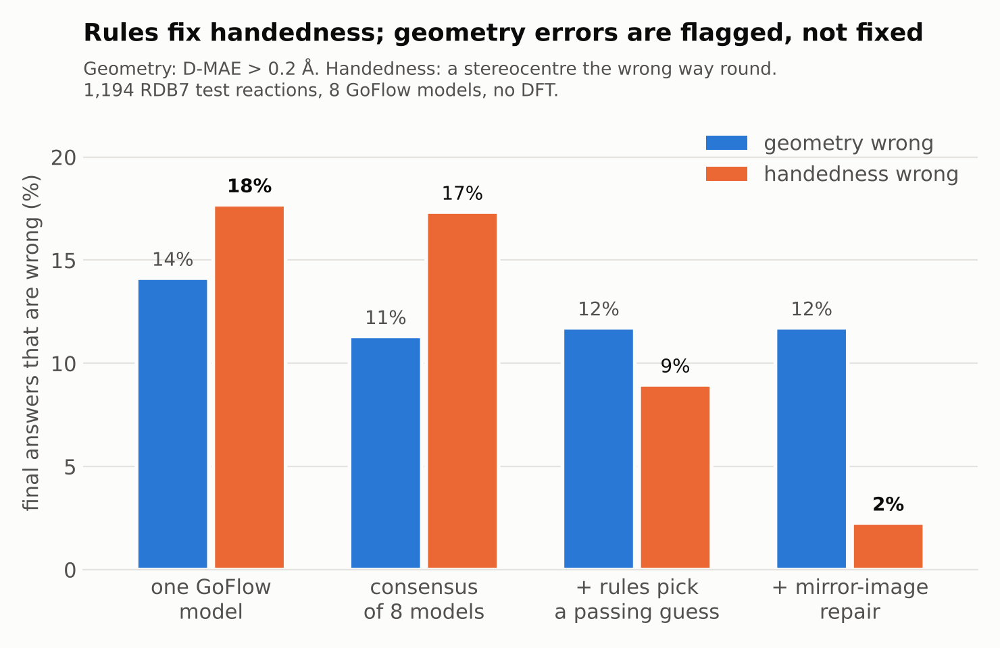
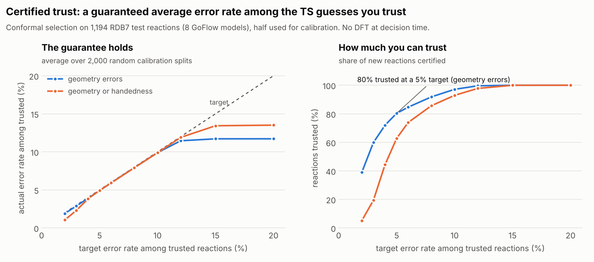

TS Second Opinion
Check, repair and triage machine-learned transition-state guesses before you spend DFT. About one in six GoFlow guesses has a stereocentre the wrong way round, and most of those are perfect mirror images that pass distance scores, chirality-blind RMSD and even a DFT frequency check. This page shows real results; the tool runs on any generator's output, with any elements.
1 · Five real cases
Each case is GoFlow's real prediction (8 models) for an RDB7 test reaction, checked by TS Second Opinion. Drag a molecule to rotate it; the two views move together.
Why
Claude's explanation
Generated in advance with the Claude Code CLI from the facts above.
Stereocentres and every rule
2 · Check your own reaction
Any TS generator, any elements. You need an atom-mapped reaction SMILES (every atom mapped),
the reactant and product as .xyz, and one or more TS guesses.
The live app is a marimo notebook running in your browser with Pyodide: nothing to install, and your files never leave your computer. The first load takes a little while, as Python starts in your browser. To install it instead, three commands, no GPU:
git clone https://github.com/tammy357/ts-second-opinion && cd ts-second-opinion
pip install -e .
marimo run apps/demo.py # the app, with an upload tab
# or: tsso check --smiles rxn.smi --reactant r.xyz --product p.xyz guesses.xyz --report report.htmlAgents can use it too: it is an MCP server with Claude Code commands
(/second-opinion, /new-rule).
3 · Rule Studio: plain English in, tested code out
A chemist writes a rule as a sentence. Claude writes the Python, and the gate keeps it only if it accepts at least 99% of 9,540 real DFT transition states, never crashes, and catches at least 1% of mirrored or distorted ones. Otherwise Claude gets the failures back and rewrites it. Two real runs:
4 · How much can you trust?
Conformal selection picks which reactions to trust so that, on average, at most the chosen share of them are wrong. Calibrated on half of the 1,194 test reactions and tested on the other half, 2,000 times.
5 · Stereo-aware leaderboard
"Success" usually means D-MAE ≤ 0.2 Å, which cannot see handedness. The last column counts only guesses that are close and correctly handed. Handedness stays at 82–85% correct for every released GoFlow model size.
6 · Results


Retrospective: GoFlow's released predictions for the 1,194 RDB7 test reactions; rules gated only on the 9,540 training reactions; no new DFT. FK-Flow (from the GoFlow group) first measured GoFlow's chirality errors and fixed them by steering generation; TS Second Opinion works afterwards, on any model's output. Full results and limitations: docs/RESULTS.md.